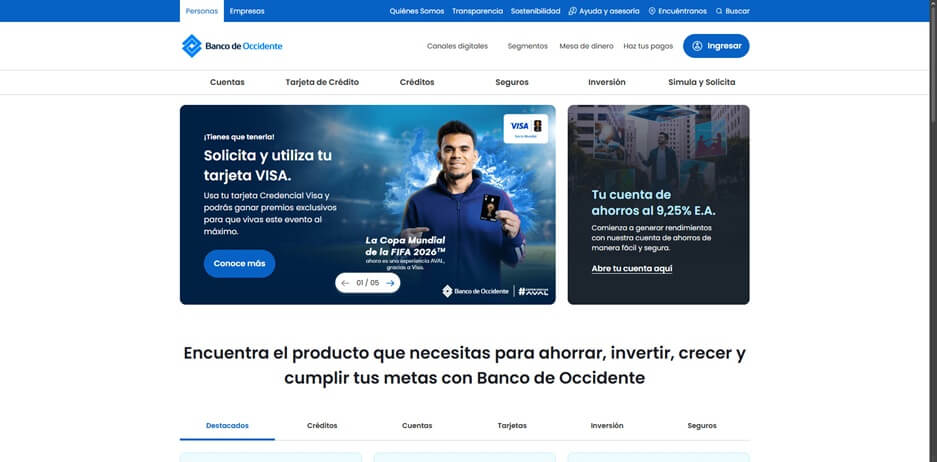
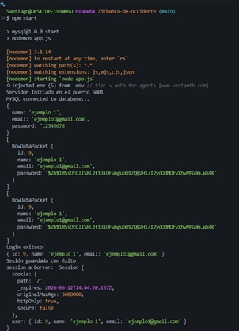

Autenticación funcional
Proyecto full stack que replica funcionalidades básicas del portal Banco de Occidente: registro, inicio de sesión, cierre de sesión, cifrado de contraseñas y persistencia en MySQL.
Clon funcional con autenticación, sesiones, bcrypt, Node.js y MySQL.

Proyecto full stack que replica funcionalidades básicas del portal Banco de Occidente: registro, inicio de sesión, cierre de sesión, cifrado de contraseñas y persistencia en MySQL.
Desarrollé la lógica de autenticación, conexión a base de datos, manejo de sesiones y estructura visual basada en el portal original.

logs de la terminal del proyecto